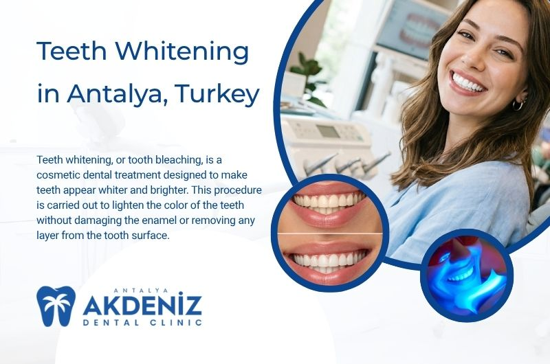

Teeth whitening, or tooth bleaching, is a cosmetic dental treatment designed to make teeth appear whiter and brighter. This procedure is carried out to lighten the color of the teeth without damaging the enamel or removing any layer from the tooth surface.
Why is teeth whitening chosen?
Teeth whitening is not only chosen to achieve 'whiter teeth'; it is also the most common cosmetic dental treatment method selected to create a healthier, more confident, and youthful appearance. The most common reasons for choosing teeth whitening are as follows:
Aesthetic and youthful appearance
A brighter smile:
The primary aim is to remove stains and unattractive discoloration from the teeth, making them appear whiter and brighter. The whitening process can lighten the color of the teeth by 5 to 8 shades on a 16-shade scale.
Rejuvenating effect:
Teeth whitening is a relatively simple 'makeover' method that helps a person look younger and healthier without requiring a major lifestyle change.
Correcting age-related discolouration:
As we age, tooth enamel wears away and the underlying dentine layer, which is a more yellowish colour, becomes more visible, causing the teeth to appear darker. Whitening helps to reverse this process.
Social and psychological factors
Increased self-confidence:
White teeth help a person feel satisfied with their smile, thereby boosting their self-confidence in social settings.
Professional appearance:
Particularly in the business world, a well-groomed smile positively influences professional image and overall appearance.
Removal of stains and discolouration
Teeth can become discoloured due to both external (surface) and internal (deep-seated) factors:
External stains:
Habits such as drinking coffee, tea, red wine, dark-coloured acidic drinks and smoking can cause stains that adhere to the pores in the enamel layer.
Internal discolouration:
- Antibiotics such as tetracycline taken during development can cause grey-blue bands on the teeth.
- If a tooth is knocked, the nerves inside may die, causing the tooth to turn pink, grey or black.
- Brown or white stains resulting from excessive fluoride intake during tooth development.
- Genetic abnormalities in the formation of tooth enamel or dentine.
Clinical benefits
A conservative method: As teeth whitening is carried out without removing any tissue from the tooth surface or damaging the enamel, it is a far more conservative approach than more invasive alternatives such as veneers or crowns.
Cost-effectiveness: Compared to other cosmetic dental procedures, it is considered one of the most cost-effective methods for improving a person's smile.
Who may benefit from teeth whitening?

- Anyone with a healthy mouth: Individuals with generally good oral health can benefit from this treatment.
- Those with food and drink stains: People with superficial or deep staining on their teeth caused by the regular consumption of coffee, tea, red wine, dark-colored fruit juices, and acidic drinks.
- Tobacco users: People who have developed stubborn yellow or brown stains on their teeth due to the use of cigarettes or tobacco products.
- Those experiencing age-related discoloration: Individuals whose teeth appear more yellow or darker as a result of enamel wear and the darkening of the underlying dentine layer with age.
- Those with intrinsic discoloration:
- Those with teeth that have undergone trauma or root canal treatment: Individuals with teeth that have lost their vitality due to impact or have darkened internally following root canal treatment (in such cases, internal bleaching may be applied).
- Those seeking aesthetic improvement and a boost in self-confidence: Individuals who wish to achieve a younger, healthier, and more professional appearance and who associate white teeth with social and psychological success.
What are the methods of teeth whitening?
Teeth whitening methods are broadly categorized according to the area of application, the condition of the tooth, and the concentration of the chemicals used:
In-office (clinic-based) whitening
This is a professional method administered by a dentist in a clinical setting.
Procedure:
The dentist uses protective barriers or retractors to protect the gums and oral tissues. They then apply a high-concentration (typically 25–40%) hydrogen peroxide gel to the teeth.
Duration:
The gel is typically left on the tooth surface for sessions of 15–30 minutes, and this process may be repeated several times during a single visit. The total treatment time varies between 30 and 90 minutes.
Light/laser activation:
In some systems, intense light sources such as LEDs, lasers, halogen lights, or heat are used to accelerate the whitening process.
Home-based (under dental supervision) whitening
This is considered the safest, most popular, and most extensively researched method.
- The dentist takes an impression of the patient's teeth to create custom-made, transparent trays. The patient applies the whitening gel prescribed by the dentist (usually 10–16% carbamide peroxide or 6% hydrogen peroxide) to these trays and wears them over their teeth.
- Depending on the type of gel used, the trays can be worn for 90 minutes during the day or overnight while sleeping. It usually takes between 3 days and 6 weeks for the teeth to reach the desired shade.
Whitening for non-vital teeth (root-canal-treated)
These are specialized techniques applied to teeth that have darkened and lost their vitality following trauma or root canal treatment.
- Internal bleaching: The whitening agent is placed directly into the pulp chamber via an opening created at the back of the tooth.
- Walking bleach: A mixture of sodium perborate and saline, or carbamide peroxide, is placed inside the tooth and sealed with a temporary filling. The patient continues their daily life with this material for a few days; the procedure is repeated in weekly sessions if necessary.
- Combined internal/external technique: Gel is applied simultaneously both inside and outside the tooth (using a custom-made tray).
Over-the-counter products
- These are products sold in shops or pharmacies that do not require supervision by a dentist.
- Methods: These include whitening strips, gels applied with a brush, mouthwashes, chewing gums, and whitening dental floss.
- Effectiveness: The concentration of the whitening agent in these products (0.1% hydrogen peroxide) is very low; consequently, they are not as effective as professional methods and generally only work on superficial stains.
Whitening toothpastes and microabrasion
- Whitening toothpastes: Rather than altering the tooth's natural color, they remove surface stains through brushing, thanks to the mild abrasives (such as silica) and detergents they contain. They help to preserve the tooth's natural shade.
- Microabrasion: This is a process where acid is applied to the tooth surface to polish and remove a very thin layer of the enamel; it can be particularly effective in removing brown stains.
Teeth whitening methods and indications
|
Whitening Method |
Suitable Situations / Clinical Indications |
|
In-Office (Power/Laser) Whitening |
Patients desiring immediate results (30–90 minutes); staining from dark foods/drinks, tobacco use, and general aging-related yellowing. |
|
At-Home (Night) Tray Whitening |
General yellow, brown, or orange stains; considered the "gold standard" for safety and long-term efficacy; ideal for patients with sensitive teeth (using lower concentrations like 10% CP). |
|
At-Home (Day) Tray Whitening |
Patients who prefer shorter wear times (30–90 mins) or bruxists (nocturnal grinders) for whom overnight tray wear is ineffective due to gel washout. |
|
Prolonged At-Home Treatment |
Stubborn stains such as Nicotine or Fluorosis (1–3 months) and Tetracycline/antibiotic stains which may require 2 to 6 months of nightly treatment. |
|
Internal (Non-Vital) Whitening |
Single dark teeth that have undergone pulpal necrosis due to trauma or have discoloured following root canal treatment. |
|
Microabrasion |
Specific surface imperfections like brown patches, white spots, or mottling of the enamel. |
|
Whitening Toothpastes & OTC Products |
Primarily for the maintenance of whiteness after professional treatment and the removal of extrinsic (surface) stains. |
What are the possible side effects of teeth whitening?
Although teeth whitening is generally considered a safe procedure, some temporary side effects may occur:
- Tooth sensitivity: This is the most common side effect and can affect up to 75% of patients. It is usually mild to moderate in severity, temporary, and occurs during or immediately after the procedure.
- Gum irritation (soft tissue irritation): This occurs as a result of prolonged contact between the whitening gel and the gums. This risk can be reduced by using the tray correctly and wiping away any excess gel.
- Root resorption: This is a condition where the body 'eats away' at the tooth root; it is a very rare but serious complication of teeth whitening.
- Exacerbation of existing white spots: White spots on the teeth caused by demineralization may become more noticeable after the procedure.
How long does the whitening effect last?
The duration of the whitening effect varies depending on the method used and the patient's habits:
- General duration: When the treatment is applied correctly, the achieved shade is generally maintained for between 18 and 24 months. Some studies indicate that results from at-home whitening using 10% carbamide peroxide can last up to two years.
- Factors that reduce the effect: Smoking and the consumption of staining beverages such as tea, coffee, and red wine cause the whiteness to fade more quickly.
- Maintenance: Regular use of whitening toothpastes can help maintain the color and remove surface stains.
Post-treatment care and precautions following teeth whitening
To enhance the longevity of the results achieved following the teeth whitening procedure and to manage any potential side effects, the following post-treatment care and precautions should be observed:
Diet and eating habits
- Avoiding color-staining foods: During the treatment process and in the period immediately afterwards, when teeth are prone to staining, you should avoid foods and drinks with intense colors, such as curry, red wine, tomato-based sauces, and similar items.
- Sensitivity to hot and cold: For the first 24–48 hours after whitening, your teeth may be highly sensitive to temperature changes; therefore, it is advisable to avoid consuming extremely hot or cold foods.
- Tobacco use: Smoking and other tobacco products cause teeth to become stained again very quickly; therefore, these habits should be avoided.
Oral Hygiene and Maintaining Results
- Regular brushing and flossing: You should continue to brush your teeth twice a day with a fluoride toothpaste and clean between your teeth using dental floss or an interdental brush.
- Care products: Whitening toothpastes help maintain whiteness by removing new surface stains rather than lightening the natural shade of the teeth.
- Bioactive toothpastes: Toothpastes containing bioactive glass can be used to remineralize tooth enamel and reduce sensitivity.
Sensitivity management
- Temporary sensitivity: It is normal for teeth to be sensitive for a few days following whitening. If the sensitivity persists, you may use mild painkillers as recommended by your dentist.
- Adjustments to at-home treatments: If you are using an at-home kit and experience sensitivity, you can continue the treatment by taking a day's break between applications or by shortening the application time.
- Specialized pastes: Applying desensitizing paste to your dental trays and leaving it for 30 minutes, or wearing them overnight in this way, may help alleviate sensitivity.
Clinical and restorative procedures
After the whitening procedure is complete, you must wait at least two weeks before having any fillings, composite bonding, or porcelain restorations carried out, to allow the tooth color to stabilize completely and for the bonding strength of the enamel layer to return to normal.
Storage of products (for home kits)
To maintain the effectiveness of the whitening gels, they must be stored in the fridge at home and kept out of reach of children.
Teeth whitening in Turkey: FAQs
Is the teeth whitening procedure painful?
There is no pain during the procedure. However, sensitivity (tooth sensitivity) may occur afterwards, particularly when consuming hot or cold foods and drinks. This is temporary and usually subsides on its own within 24–48 hours.
Is teeth whitening suitable for everyone?
No. Teeth whitening is not recommended in the following cases:
- Pregnant or breastfeeding women
- Those under the age of 18
- Those with severe gum recession or gum disease
- Those with fillings, veneers, crowns or implants (these do not take on the same shade as natural teeth)
- Those with cavities or enamel cracks (these must be treated first)
Do fillings, veneers, or implants whiten?
No. Teeth whitening only affects natural tooth structure. Porcelain veneers, zirconia, composite fillings, or implants are not affected by whitening agents. Therefore, the color of existing restorations may remain mismatched with your natural teeth following the procedure.
How long do the results of teeth whitening last?
They are not permanent. On average, the results last between 6 months and 3 years. Smoking and consuming coloring foods and drinks such as tea, coffee, and cola shorten the duration of the results. Regular maintenance and touch-up whitening treatments can help prolong the results.
Related: How Long Does Teeth Whitening Last?
Does teeth whitening damage tooth enamel?
When carried out under the supervision of a dentist, using the correct products and for an appropriate duration, whitening treatments do not cause permanent damage to tooth enamel. However, the careless, excessive, or prolonged use of high-concentration products can lead to erosion of the enamel structure and permanent sensitivity.
How many sessions are required for teeth whitening?
In-office whitening typically takes a single session (45–90 minutes). In cases of very stubborn staining or if the desired shade cannot be achieved, a repeat session may be carried out 1–2 weeks later. Home-use whitening, on the other hand, generally requires regular application at night or during the day over a period of 10–14 days.
Which types of discoloration respond best to whitening?
- Best response: Natural yellowing due to aging, stains from smoking, tea, and coffee.
- Moderate response: Stains caused by fluorosis (excess fluoride), mild tetracycline stains.
- Poor response or no response: Grey-blue discoloration caused by antibiotics (tetracycline), genetically caused grey tones, and discoloration in teeth resulting from trauma.
Will my gums burn during whitening?
In-office treatments, the dentist covers the gums with a protective barrier (latex or resin). With at-home whitening, if the trays do not fit properly, gel leaking onto the gums may cause a brief burning sensation. This is temporary and subsides when rinsed with water.
Is it safe to whiten teeth at home without a dentist?
One-size-fits-all trays or whitening gels containing high levels of abrasives are not recommended. These products can cause chemical burns to the gums, uneven discoloration of the teeth, and enamel erosion. Safe at-home whitening must be carried out using custom-made trays fitted by a dentist.
Related: Is it safe to whiten teeth at home without a dentist?
Can teeth be whitened during pregnancy?
In general, teeth whitening is not recommended during pregnancy and breastfeeding. During this period, only scaling and preventive care are advised.
How often can I whiten my teeth?
Dentists generally recommend repeating in-office whitening treatments once a year. At-home maintenance whitening can be carried out in short 3–5-day periods every six months. Whitening treatments carried out too frequently can weaken the enamel structure and lead to permanent sensitivity.
Does teeth whitening make my teeth whiter than their natural color?
Yes, but there is a limit. Teeth whitening helps your teeth reach the lightest shade within their natural potential. The artificial whiteness known as 'porcelain white' is generally not achievable on natural teeth. The ideal result is a whiteness that preserves a natural appearance, is not excessive, and harmonizes with your facial features.
Does brushing your teeth or using bicarbonate of soda whiten them?
Brushing your teeth removes existing plaque but does not change the color of your teeth. Bicarbonate of soda is an abrasive substance; regular use causes micro-cracks and wear in the tooth enamel. Over time, this leads to teeth staining more easily and causing permanent sensitivity. Chemical whitening (peroxide-based) is not the same as mechanical cleaning (bicarbonate of soda).
Why do my teeth look streaky after whitening?
This is usually caused by dehydration (dryness). The whitening gel temporarily dries out the teeth, and the transitions between the enamel and dentine may become more pronounced. This appearance usually disappears within 24–72 hours once saliva flow returns to normal. If it persists, it may be due to existing enamel cracks or fluorosis.